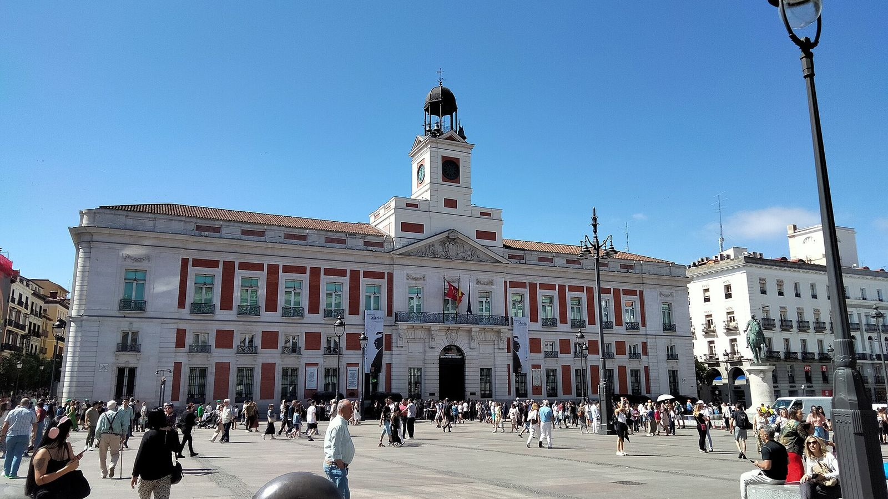

A gate facing the sunrise
The square takes its name from a gate in the old city wall, traditionally said to have been decorated with a sun because it faced east.
Puerta del Sol began as a gate in Madrid's 15th-century wall. Today every Spanish New Year starts here: the whole country eats twelve grapes to the chimes of the clock on the old Post Office.

The square takes its name from a gate in the old city wall, traditionally said to have been decorated with a sun because it faced east.
The clock on the Real Casa de Correos, given in 1866 by clockmaker José Rodríguez de Losada, rings in the New Year on national TV. Spaniards eat one grape for each chime.
A plaque on the pavement in front of the building marks Kilometre Zero, the point from which Spain's main roads are measured.
At midnight on New Year's Eve, people eat one grape for each of the 12 chimes of the Puerta del Sol clock, broadcast live across Spain.
A plaque in front of the Real Casa de Correos marking the starting point for measuring Spain's national roads.
It was a gate (puerta) in the city wall, said to have been decorated with a sun because it faced east.